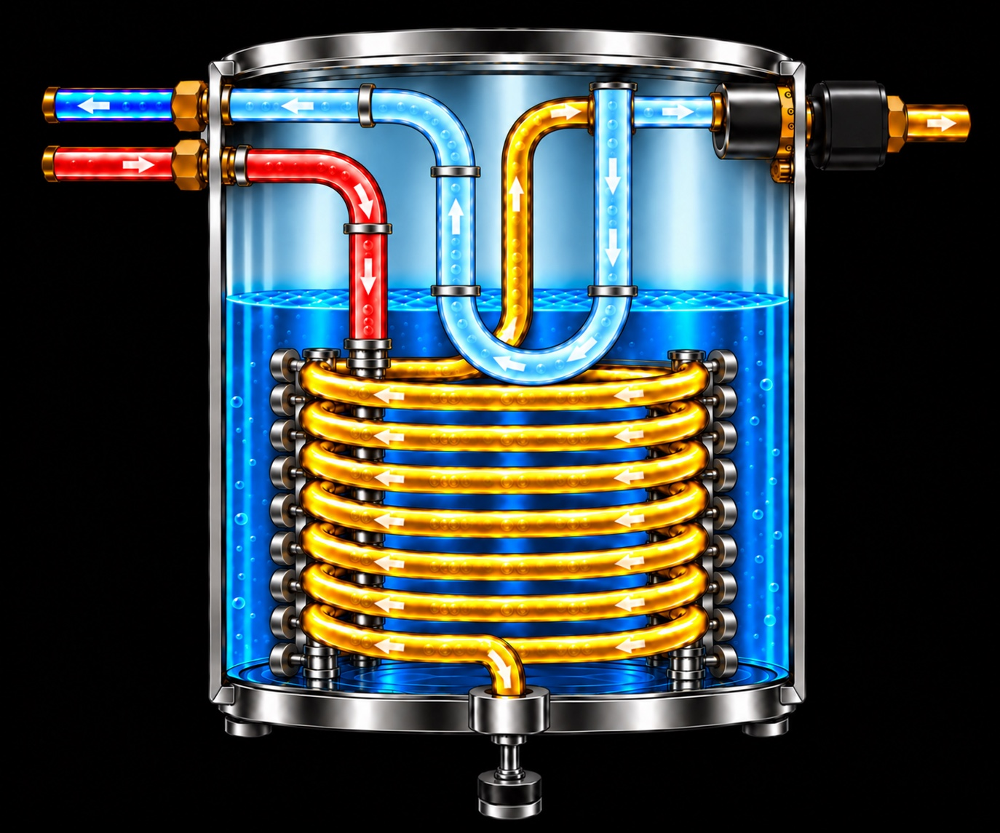

Chopeira de expansão direta — R134a
Circuito redesenhado com topologia visual orientada pelo vídeo enviado. Referência experimental E038 / E030.
Circuito instrumentado — expansão direta
Condensador superior • capilar à esquerda • boiler central • compressor à direita
Imagem fornecida por você, preservada sem redesenho. Selecione um componente para destacá-lo; as explicações ficam fora da imagem.
Referência visual, não desenho de fabricação. As cores e as setas do material original não devem ser usadas isoladamente para determinar o sentido real de cada conexão.
Instrumentação • medido × previsto × diferença
Grandezas da coluna de instrumentação, exceto as pressões inseridas e ΔP, refletem interpolação entre E038/E030: não são uma previsão independente da alteração da perda de carga.
Comparação da capacidade de extração
| Condição de ensaio | Ambiente | Entrada | Vazão | Saída |
|---|---|---|---|---|
| E038 | 24,25 °C | 24,07 °C | 59,40 L/h | 2,98 °C |
| E030 | 32,15 °C | 32,01 °C | 37,08 L/h | 3,03 °C |
O balanço de energia utiliza propriedades aproximadas do chope: ρ = 1,01 kg/L; cp = 3,90 kJ/(kg·K). É possível cadastrar outras propriedades em versões futuras.
TreinaMEMO V25 • Modelo revisado de engenharia experimental • As medições reais permanecem imutáveis. Dados salvos localmente; a publicação na Vercel não sincroniza com Supabase.